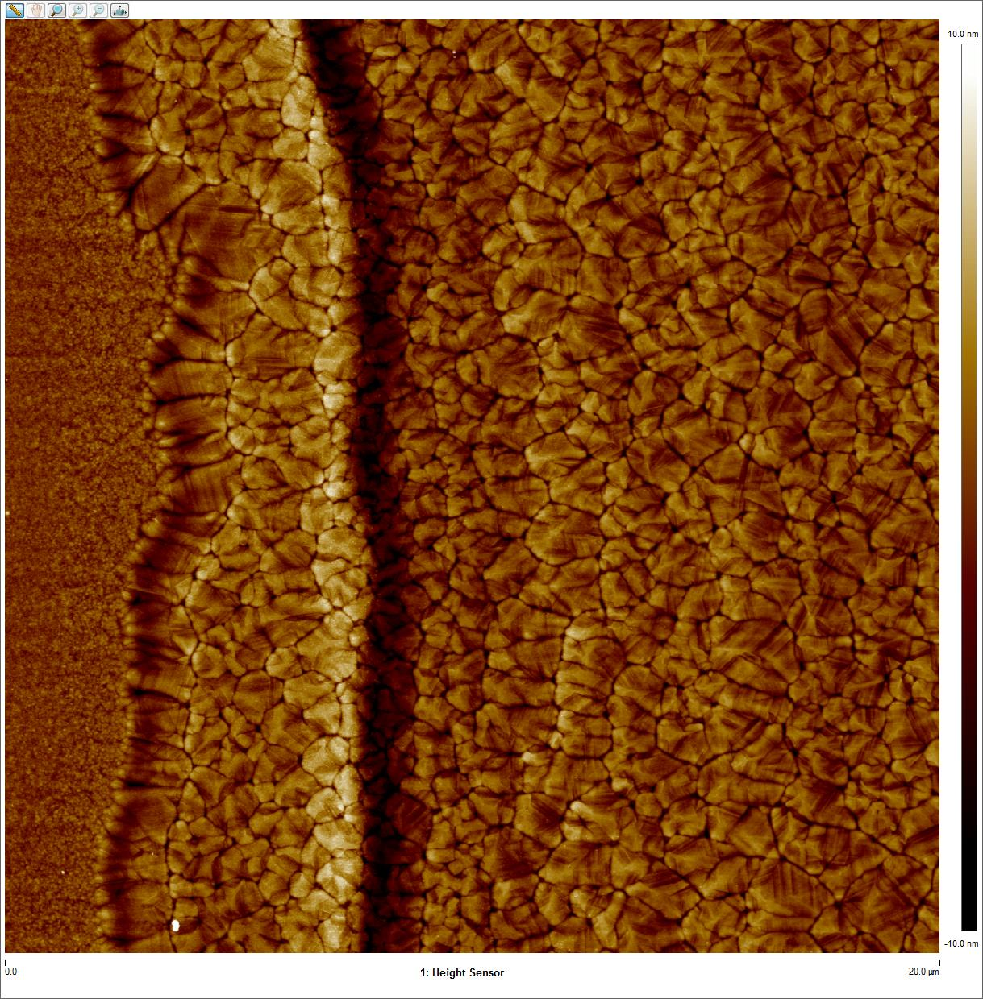
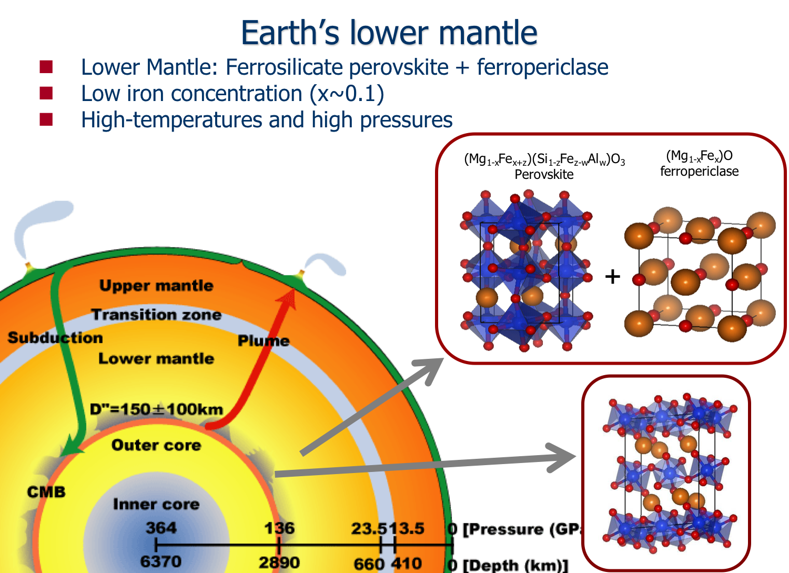
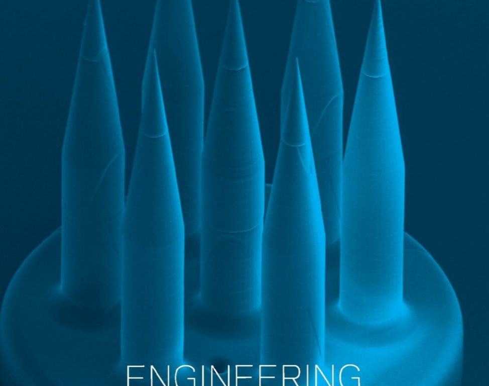
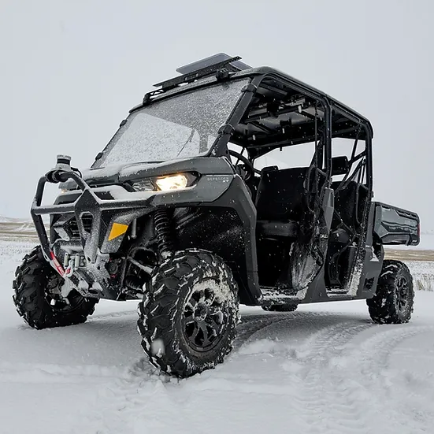
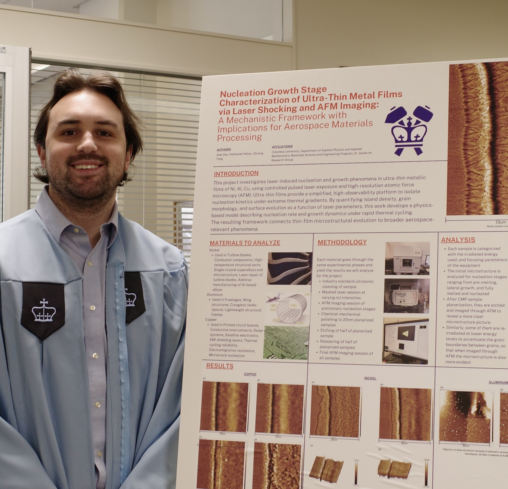

Physics · Materials Science · Aerospace Engineering
Engineering from the nanoscale up to spacecraft.
I'm Jose Osa — physicist turned materials engineer, now pursuing an M.S. in Aerospace Engineering at the University of Michigan. I've printed nanoscale structures for cochlear implants, modeled lower mantle mineral thermodynamics at Lamont-Doherty Earth Observatory, and designed rotating spacecraft for asteroid servicing.
The Scale I Work Across
From quantum to orbital
3D harmonic oscillator solutions for group-6 hexafluorides — wave functions, molecular symmetry, pending publication
QHO Model →Langmuir probe diagnostics in argon plasma; laser-induced nucleation in Ni, Al, Cu ultra-thin films via AFM
Laser–Matter →2PP micro-columns for cochlear implants (ASRC); BurnMan EOS for lower mantle minerals at Lamont-Doherty
Mantle Research →Autonomous UTV terrain navigation (dolaGon); TITAN precision-agriculture drone with nanofertilizer deployment
TITAN Drone →Crescent Moon rotating spacecraft for NEO servicing; ARES Mars precursor habitat design
Crescent Moon →Selected Portfolio
Engineering projects


TITAN Project
Autonomous agriculture drone with targeted nanofertilizer deployment.

Argon Plasma Manipulation
Langmuir probe diagnostics and plasma striation analysis.

Laser–Matter Interaction
Laser-induced nucleation in Ni, Al, Cu ultra-thin films — AFM imaging and physics-based growth model. Dr. James Im Research Group.
Research Experiences
Labs, groups & industry

Lower Mantle Minerals Engineering
BurnMan simulations of lower mantle mineral thermodynamics — bulk modulus, thermal expansion, and pressure-temperature behavior. Wentzcovitch Group, Summer 2025.

Medical Device Nano-Fabrication
2PP lithography with the Nanoscribe printer at ASRC — fabricating and mechanically characterizing structures for cochlear implant development. Kysar Lab, 2025.

Self-Driving Off-Road Vehicles
Physics solution for emergency recall systems and Terrain Testing Coordinator for autonomous UTV development. dolaGon, Fall 2022.
About
My path

I started in physics and mathematics at Sewanee — grounded in the analytical mechanics and mathematical structure that make complex systems tractable. That foundation pulled me toward the question of how materials actually behave under extreme conditions: pressures and temperatures no lab can replicate, or manufacturing at scales a human hand can't reach.
At Columbia I've printed 100 μm micro-columns for cochlear implants using two-photon polymerization, computed thermodynamic equations of state for lower mantle minerals across the geotherm, designed rotating spacecraft for asteroid servicing, and led a NASA RASC-AL Mars habitat concept from architecture to subsystems. A Space Architecture Diploma from Different Systems added the systems-level lens. Every project is a step in the same direction: making the physics precise enough, and the engineering specific enough, to build things that work in environments that push both to their limits.
I'm now at the University of Michigan pursuing an M.S. in Aerospace Engineering — with a focus on spacecraft materials, propulsion systems, and the structures and mechanisms that keep humans alive far from Earth. I'm actively seeking research and internship opportunities in aerospace and advanced materials for Summer 2027.
Languages: English · Spanish · German · French
Let's connect
Working at the edge of materials or space?
M.S. Aerospace Engineering, University of Michigan (Fall 2026 –). I'm actively seeking research and internship opportunities in spacecraft systems and advanced materials — available Summer 2027.